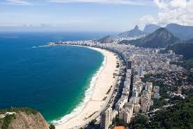

You chose Bariloche, Argentina!
San Carlos de Bariloche, usually known as Bariloche, is a city in the province of Río Negro, Argentina, situated in the foothills of the Andes on the southern shores of Nahuel Huapi Lake. It is located within the Nahuel Huapi National Park.After development of extensive public works and Alpine-styled architecture, the city emerged in the 1930s and 1940s as a major tourism centre with skiing, trekking and mountaineering facilities. In addition, it has numerous restaurants, cafés, and chocolate shops. The city has a permanent population of 108,205 according to the 2010 census.

San Carlos de Bariloche, usually known as Bariloche, is a city in the province of Río Negro, Argentina, situated in the foothills of the Andes on the southern shores of Nahuel Huapi Lake. It is located within the Nahuel Huapi National Park.After development of extensive public works and Alpine-styled architecture, the city emerged in the 1930s and 1940s as a major tourism centre with skiing, trekking and mountaineering facilities. In addition, it has numerous restaurants, cafés, and chocolate shops. The city has a permanent population of 108,205 according to the 2010 census
You chose St Petesburgo, Rusia!
Saint Petersburg (Russian: Санкт-Петербу́рг, tr. Sankt-Peterburg; IPA: [ˈsankt pʲɪtʲɪrˈburk] ( listen)) is the second largest city in Russia, politically incorporated as a federal subject (a federal city). Situated on the Neva River, at the head of the Gulf of Finland on the Baltic Sea, it was named Saint Petersburg in 1703. In 1914, the name was changed from Saint Petersburg to Petrograd (Russian: Петрогра́д; IPA: [pʲɪtrɐˈgrat]), in 1924 to Leningrad (Russian: Ленингра́д; IPA: [lʲɪnʲɪnˈgrat]), and in 1991 back to Saint Petersburg.[

Saint Petersburg (Russian: Санкт-Петербу́рг, tr. Sankt-Peterburg; IPA: [ˈsankt pʲɪtʲɪrˈburk] ( listen)) is the second largest city in Russia, politically incorporated as a federal subject (a federal city). Situated on the Neva River, at the head of the Gulf of Finland on the Baltic Sea, it was named Saint Petersburg in 1703. In 1914, the name was changed from Saint Petersburg to Petrograd (Russian: Петрогра́д; IPA: [pʲɪtrɐˈgrat]), in 1924 to Leningrad (Russian: Ленингра́д; IPA: [lʲɪnʲɪnˈgrat]), and in 1991 back to Saint Petersburg.
You chose New York, USA!
New York is a state in the Northeastern United States and is the 27th-most extensive, fourth-most populous, and seventh-most densely populated U.S. state. New York is bordered by New Jersey and Pennsylvania to the south and Connecticut, Massachusetts, and Vermont to the east. The state has a maritime border in the Atlantic Ocean with Rhode Island, east of Long Island, as well as an international border with the Canadian provinces of Quebec to the north and Ontario to the west and north.

New York is a state in the Northeastern United States and is the 27th-most extensive, fourth-most populous, and seventh-most densely populated U.S. state. New York is bordered by New Jersey and Pennsylvania to the south and Connecticut, Massachusetts, and Vermont to the east. The state has a maritime border in the Atlantic Ocean with Rhode Island, east of Long Island, as well as an international border with the Canadian provinces of Quebec to the north and Ontario to the west and north.
You chose Portland Oregon, USA!
Portland (/ˈpɔːrtlənd/) is the largest city in the U.S. state of Oregon and the seat of Multnomah County. It is located in the Willamette Valley region of the Pacific Northwest, at the confluence of the Willamette and Columbia rivers. The city covers 145 square miles (376 km²) and had an estimated population of 632,309 in 2015,[7][9] making it the 26th most populous city in the United States. Approximately 2,389,228 people live in the Portland metropolitan statistical area (MSA), the 23rd most populous MSA in the United States.

Portland (/ˈpɔːrtlənd/) is the largest city in the U.S. state of Oregon and the seat of Multnomah County. It is located in the Willamette Valley region of the Pacific Northwest, at the confluence of the Willamette and Columbia rivers. The city covers 145 square miles (376 km²) and had an estimated population of 632,309 in 2015,[7][9] making it the 26th most populous city in the United States. Approximately 2,389,228 people live in the Portland metropolitan statistical area (MSA), the 23rd most populous MSA in the United States.
You chose Rio de Janeiro, Brasil!
Rio de Janeiro (/ˈriːoʊ di ʒəˈnɛəroʊ, -deɪ ʒə-, -də dʒə-/; Portuguese pronunciation: [ˈʁi.u dʒi ʒɐˈnejɾu];[2] River of January), or simply Rio,[3] is the second most populous municipality in Brazil and the sixth largest city in the Americas. The metropolis is anchor to the Rio de Janeiro metropolitan area, the second most populous metropolitan area in Brazil and seventh most populous in the Americas. Rio de Janeiro is the capital of the state of Rio de Janeiro.

Rio de Janeiro (/ˈriːoʊ di ʒəˈnɛəroʊ, -deɪ ʒə-, -də dʒə-/; Portuguese pronunciation: [ˈʁi.u dʒi ʒɐˈnejɾu];[2] River of January), or simply Rio,[3] is the second most populous municipality in Brazil and the sixth largest city in the Americas. The metropolis is anchor to the Rio de Janeiro metropolitan area, the second most populous metropolitan area in Brazil and seventh most populous in the Americas. Rio de Janeiro is the capital of the state of Rio de Janeiro.
You chose Buenos Aires, Argentina!
Buenos Aires (/ˈbweɪnəs ˈɛəriːz/ or /ˈaɪrɪs/,[3] Spanish: [ˈbwenos ˈaiɾes]) is the capital and largest city of the Argentine Republic. The city is located on the western shore of the estuary of the Río de la Plata, on the continent's southeastern coast. The Greater Buenos Aires conurbation, which also includes several Buenos Aires Province districts, constitutes the third-largest conurbation in Latin America, with a population of around seventeen million.[1]The city of Buenos Aires is neither part of Buenos Aires Province nor the Province's capital

Buenos Aires (/ˈbweɪnəs ˈɛəriːz/ or /ˈaɪrɪs/,[3] Spanish: [ˈbwenos ˈaiɾes]) is the capital and largest city of the Argentine Republic. The city is located on the western shore of the estuary of the Río de la Plata, on the continent's southeastern coast. The Greater Buenos Aires conurbation, which also includes several Buenos Aires Province districts, constitutes the third-largest conurbation in Latin America, with a population of around seventeen million.[1]The city of Buenos Aires is neither part of Buenos Aires Province nor the Province's capital
You chose Los Angeles, United States!
Los Angeles (Listeni/lɒs ˈændʒəlᵻs/, Spanish for "The Angels"),[14] officially the City of Los Angeles and often known by its initials L.A., is the second-largest city in the United States after New York City, the most populous city in the state of California, and the county seat of Los Angeles County. Situated in Southern California, Los Angeles is known for its mediterranean climate, ethnic diversity, sprawling metropolis, and as a major center of the American entertainment industry. Los Angeles lies in a large coastal basin surrounded on three sides by mountains reaching up to and over 10,000 feet (3,000 m).

Los Angeles (Listeni/lɒs ˈændʒəlᵻs/, Spanish for "The Angels"),[14] officially the City of Los Angeles and often known by its initials L.A., is the second-largest city in the United States after New York City, the most populous city in the state of California, and the county seat of Los Angeles County. Situated in Southern California, Los Angeles is known for its mediterranean climate, ethnic diversity, sprawling metropolis, and as a major center of the American entertainment industry. Los Angeles lies in a large coastal basin surrounded on three sides by mountains reaching up to and over 10,000 feet (3,000 m).
You chose Las Vegas, United States!
LLas Vegas (/lɑːs ˈveɪɡəs/, also locally /lɑːs ˈvɛɡᵻs/; Spanish: [laz ˈβeɣas]) officially the City of Las Vegas and often known as simply Vegas, is a city in the United States, the most populous city in the state of Nevada, the county seat of Clark County, and the city proper of the Las Vegas Valley.[5] Las Vegas is an internationally renowned major resort city known primarily for gambling, shopping, fine dining and nightlife and is the leading financial, commercial, and cultural center for Southern Nevada.

Las Vegas (/lɑːs ˈveɪɡəs/, also locally /lɑːs ˈvɛɡᵻs/; Spanish: [laz ˈβeɣas]) officially the City of Las Vegas and often known as simply Vegas, is a city in the United States, the most populous city in the state of Nevada, the county seat of Clark County, and the city proper of the Las Vegas Valley.[5] Las Vegas is an internationally renowned major resort city known primarily for gambling, shopping, fine dining and nightlife and is the leading financial, commercial, and cultural center for Southern Nevada.